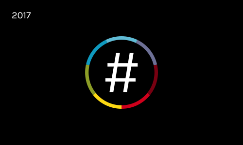
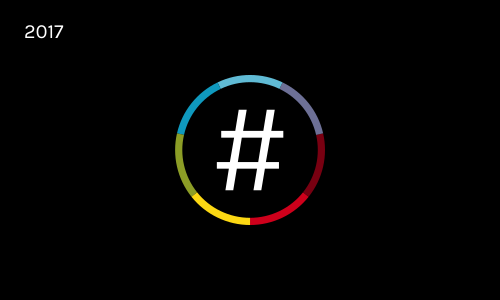

NationBuilder
Designer and Developer for community management software company

NationBuilder offers online software for building and managing a community along with a suite of other products geared towards supporting leadership.
Rebranding —
In October of 2017, NationBuilder officially launched a major rebrand. The bold new logo represents community, inclusion, and the power of creation on the internet. Along with fine-tuning our branding assets, I worked for months in advance alongside our design and development team, updating the entire website and all related properties to align with our new appearance and voice. One page I really enjoyed working on was our Brand Resources page.
 

NationBuilder Stories —
NationBuilder software was designed to meet the needs of political campaigns, nonprofits and anyone with the goal of reaching and organizing large groups of people. I was the primary developer for the Stories section of the website, which showcases the diverse range of customers and their impact on the world.
NationBuilder Cities —
In concert with providing software, NationBuilder started an effort to facilitate in-person meetups for local leaders and NationBuilder customers. I worked to develop a template for facilitators setting up new city chapters, and I co-organized and hosted our initial NationBuilder NYC meetups.


Women’s Conference —
The NationBuilder Women’s Conference is a multi-day gathering for women in leadership to discuss challenges facing women today and tell their stories of growth and persistence. I attended the first conference in Los Angeles in April 2017, and contributed my skills to support the event. I was the primary developer for the event website, facilitated a collaborative textile-arts project, and gave a speech about the history of textiles and women.